Here are some of the photos I've taken. My main camera is a Nikon D3500 which was graciously gifted to me by a family member who no longer needed it. I do also have a pocket digital camera from the 2000s which I use for some experimental shots or when I wish to capture a certain aesthetic. Below you will find some environment shots, some wildlife photography and some experimental photos and edits I've made. I wanted to call the environment shots nature shots, however there's almost always some man-made stuff in it like roads or buildings. Click on any of the pictures for a larger version.
Environments
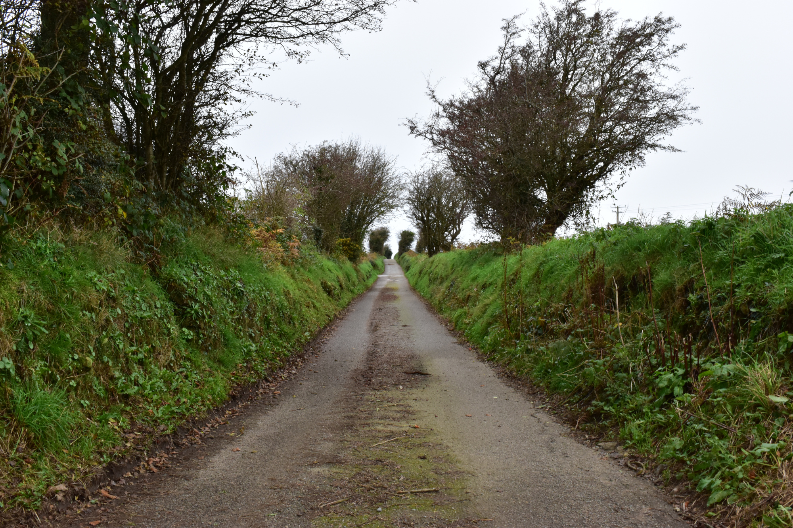I like photographing roads, lanes and paths. This particular bóithrín on the outskirts of Enniscorthy proved to be an interesting challenge. Not because of any photography related reasons, but rather because it is a single lane and I had to dive onto the embankments on either side every time a car came along.
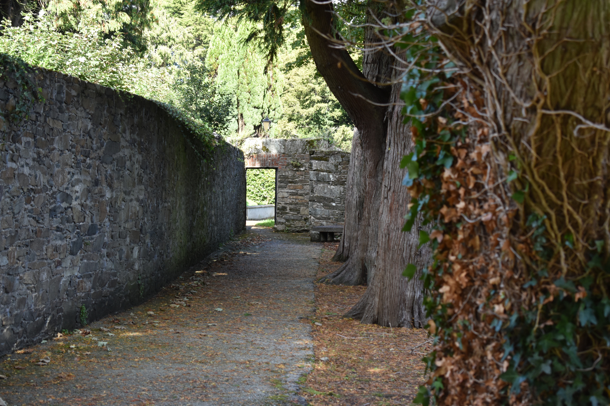This photograph was taken behind St. Aidan's Cathedral in Enniscorthy. It has a very old graveyard behind it and this photo was taken there. I was walking through one day when I stopped and caught this view. I thought it looked quite nice and decided I should photograph it. That doorway at the end leads to the garden of the Parochial house or the "Manse" as it's known locally. This is one of my favourite photos that I have taken.
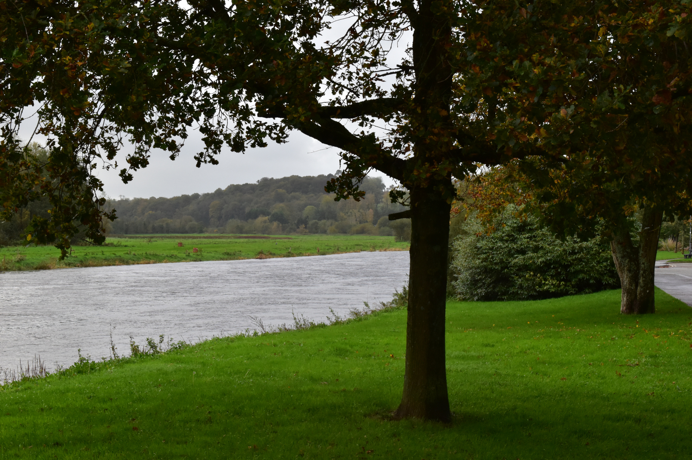There's no special background or story behind this picture, just a young Oak tree on the banks of the River Slaney which runs through Enniscorthy. Some time ago I did take a lot of photos of various things on the banks of the Slaney, since you can walk along it for several kilometers. My Grandmother really likes this photo.
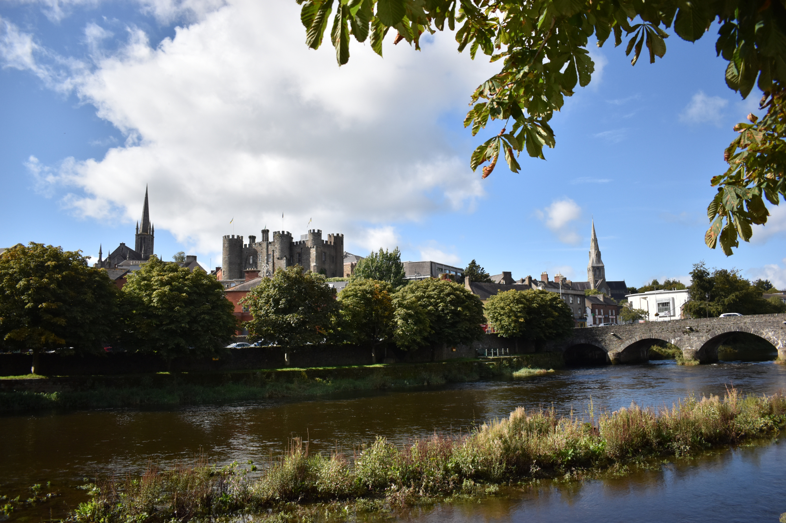A photo attempting to capture all the really well known sites of Enniscorthy, I think I managed it. From left to right: St. Mary's Church, Enniscorthy Castle, St. Aidan's Cathedral, The Old Bridge and the River Slaney on the bottom.
Wildlife
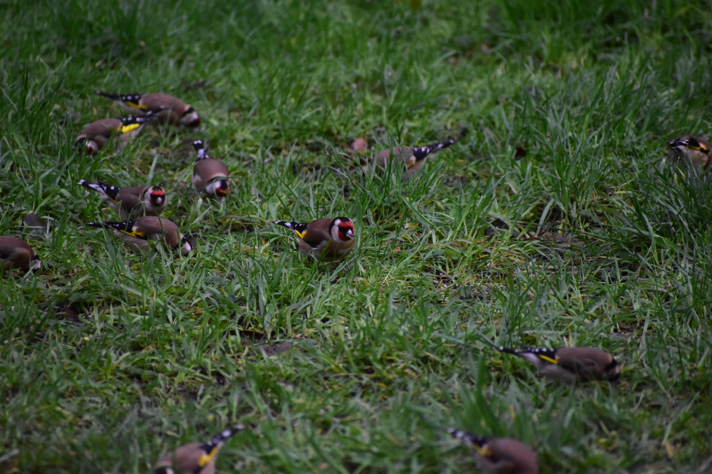We keep birdfeeders at home, and have done for many years now. Every year there is some species of local bird which will be the most numerous for that particular year, last year it was Starlings, this year it was Goldfinches. I took a series of photos of the birds in our garden with my at the time shiny new telephoto (long range) lens. This one is of a group of Goldfinches eating seed on the ground, also I was about 20 meters away which speaks to the zoom factor of the lens.
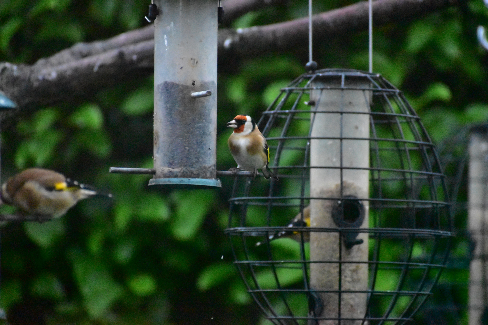Another image of some Goldfinches, this time on the birdfeeders. This picture is not quite as crisp as I'd like since I was using max zoom and wasn't able to set up my tripod from where I was taking the photo, so even with the camera's stabilization this shot is slightly shaky.
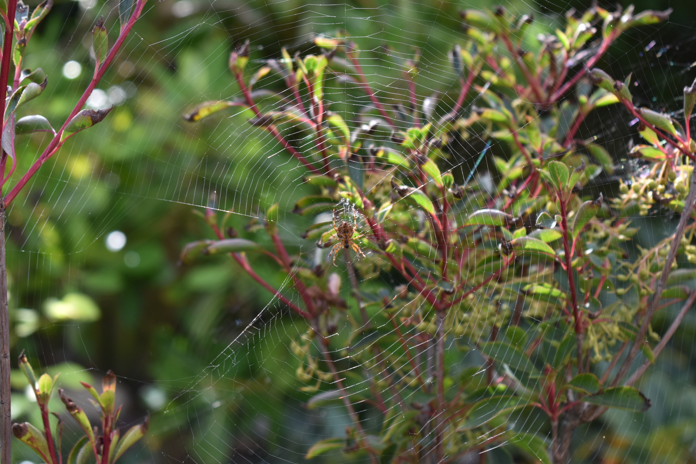This was an impromptu photo I took on a summer's day, at my mother's request since this was also in our garden. I'm not much of an arachnologist so I'm not sure what kind of spider this is.
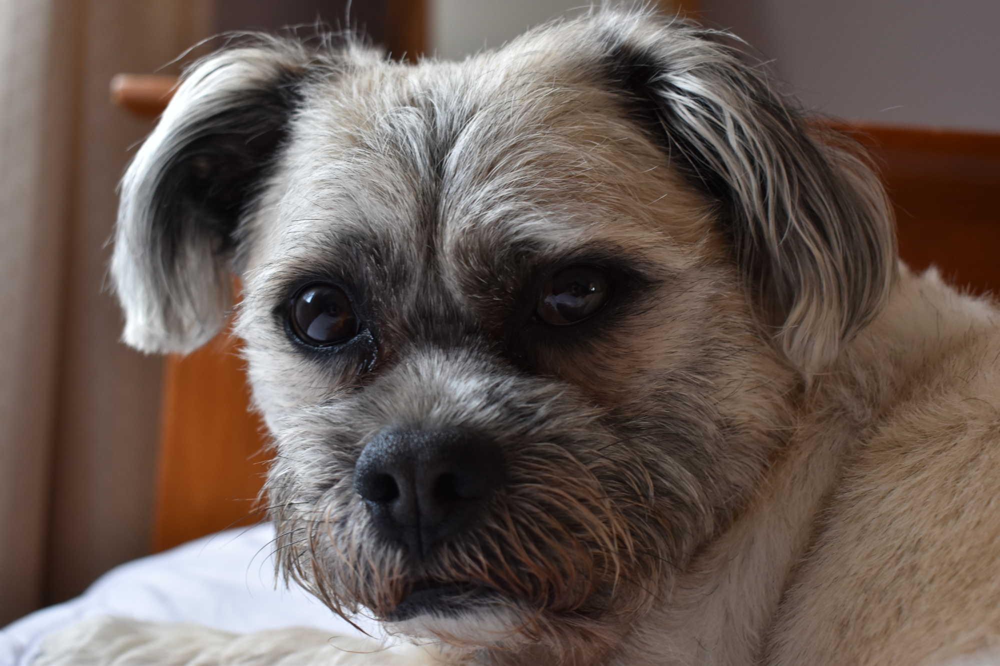I'm not sure if my dog counts as wildlife, but I put him in here anyway.
Edits/Experimental
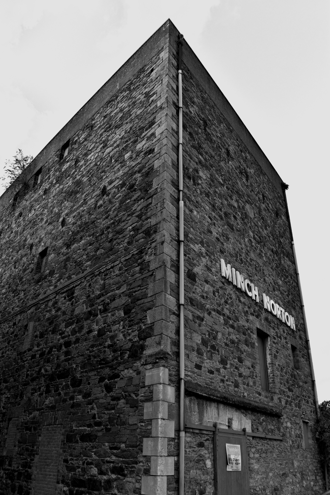I was walking towards the River Slaney for some more nature shots one day when I passed this building. My understanding is that it used to be a workhouse during the Victorian period. I got down very low to the ground to take this picture to accentuate the imposing look of the building.
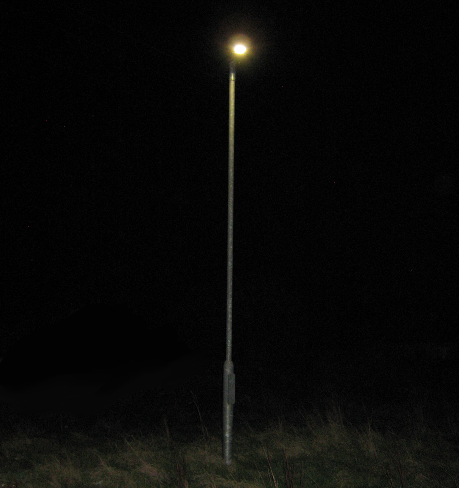I took this picture with the old digital camera I mentioned earlier. I was testing the camera's ability to take photos in the dark and how it handles big differences in light (very dark vs very bright with this lamp post) and I really liked the slightly creepy feel of this image so I touched it up to remove a house in the background and the road in front of it so now it looks a bit uncanny as well. Why is there a lamp post in the middle of a field?
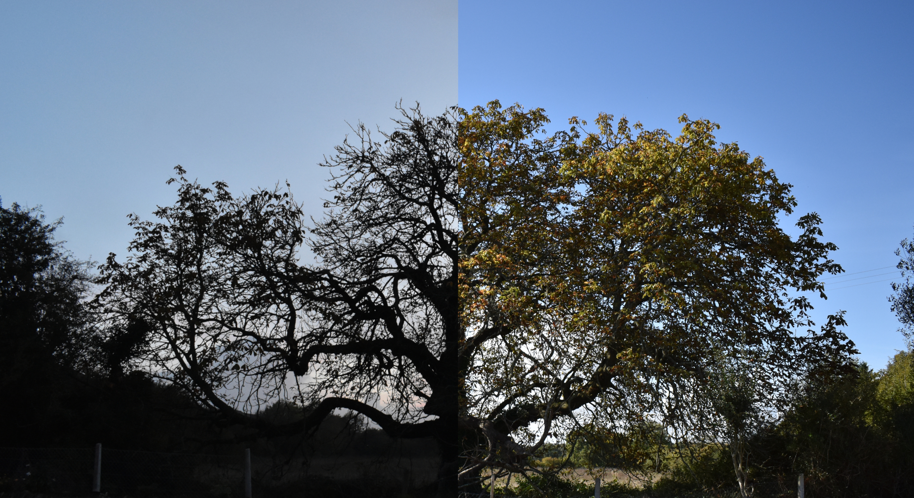This image was something of a happy accident. As you can see it's two images spliced together. However, I took the photos several months apart, early August and late October if memory serves. The accidental part is that I just so happened to be standing in the same spot, at the same angle in both pictures so they line up almost perfectly. I didn't notice this until much later when I was comparing the two so I spliced them together to make a contrasting image.